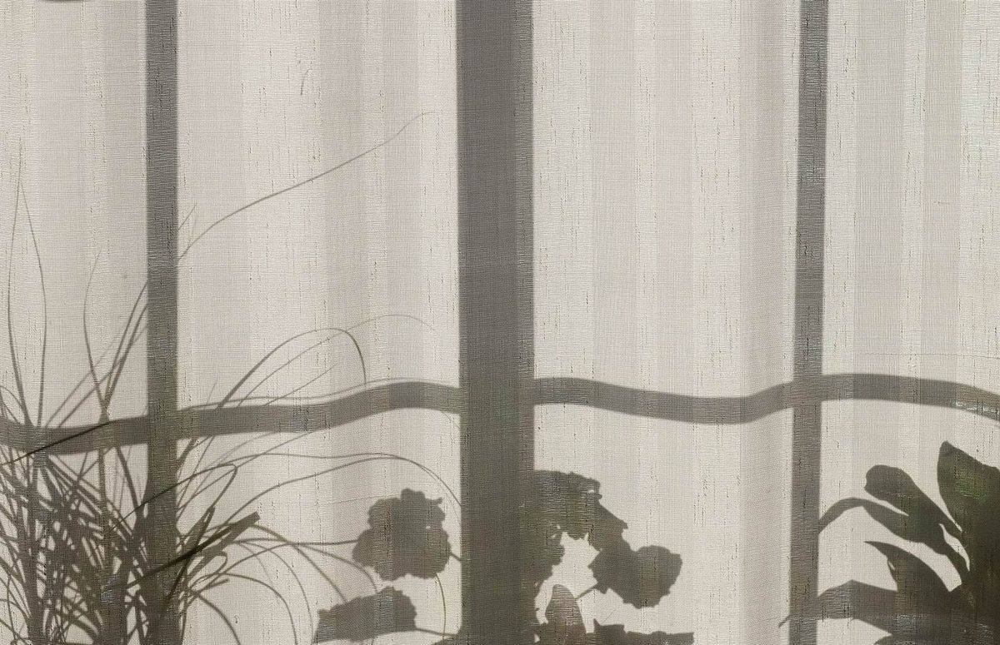

TUNING IN … ララ
らら
ララ、と口ずさむ
ちょうどいい周波数の
カフェ。


中津市定留
LaLa Cafe
今日の受信
大分県中津市・定留(さだとめ)にあるカフェです。このサンプルでは、ラジオのダイヤルを合わせるように「ホーム→店のこと→メニュー→口コミ→アクセス」と局を切り替えていく作りにしました。
※屋号「ララ」の響きから制作側が連想した演出です。お店の理念・由来とは無関係です。
チャンネル一覧
2店のこと所在地と、わかっていること 3メニュー準備中 4口コミイメージ例(創作) 5アクセス地図と所在地


最新の様子はInstagramで。
Instagramを見る